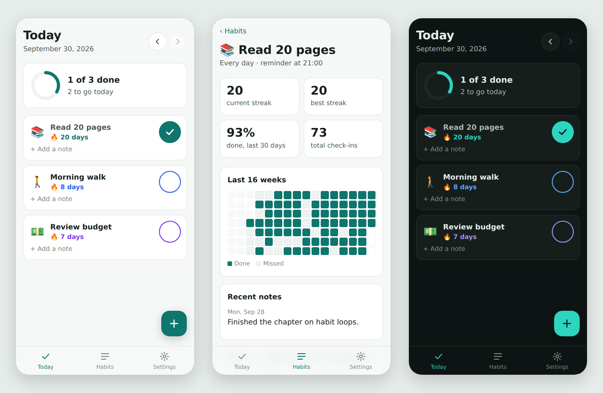

Habit tracker
A private, offline habit tracker that installs like an app

Why I built it
I wanted a simple way to track my own daily habits, one that keeps my data private and works without signing up for anything. It began in 2022 as a plan for a native Android app, and I had it rebuilt as a progressive web app so it runs on any phone.
I decided what the app should do and how it should feel to use. Claude, an AI assistant, wrote and ran the code. Coding isn't my specialty, and this is a personal tool rather than a sign of the kind of role I'm after.
What it does
- Daily checklist with a progress ring, plus the option to go back and fill in earlier days.
- Flexible schedules: every day, weekdays, or any days you pick. A day off never breaks a streak.
- Streaks and stats: current and best streak, 30-day completion rate, and a 16-week calendar grid for each habit.
- Notes on any habit on any day.
- Reminders handed to the phone's calendar as a repeating event.
- Works offline, installs to the home screen, and follows light or dark mode.
- Backup and restore as a file, because all data stays on the device.
Decisions worth noting
- No server, no account. For a personal tool, keeping data on the phone is simpler and more private. Sync can come later.
- Calendar-based reminders. A web app can't reliably schedule notifications without a push server, so it exports a standard calendar event instead.
- Tested core logic. Streaks and dates are separate from the interface and covered by unit tests that run on every push, including daylight-saving edge cases.